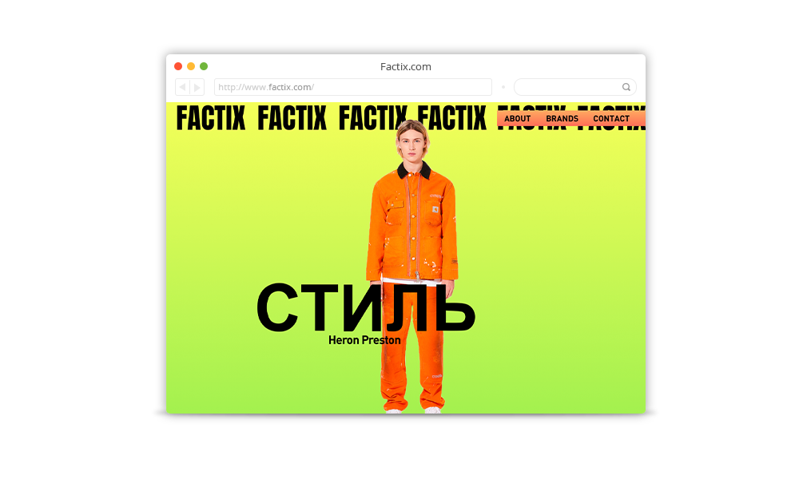
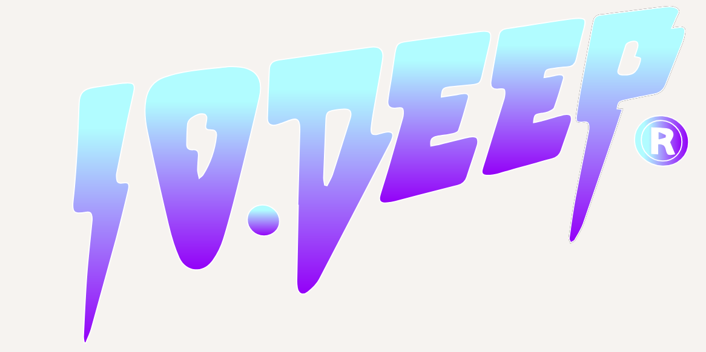
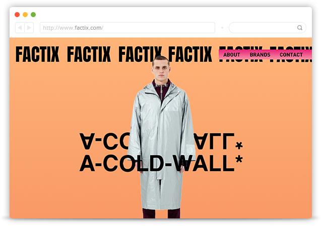
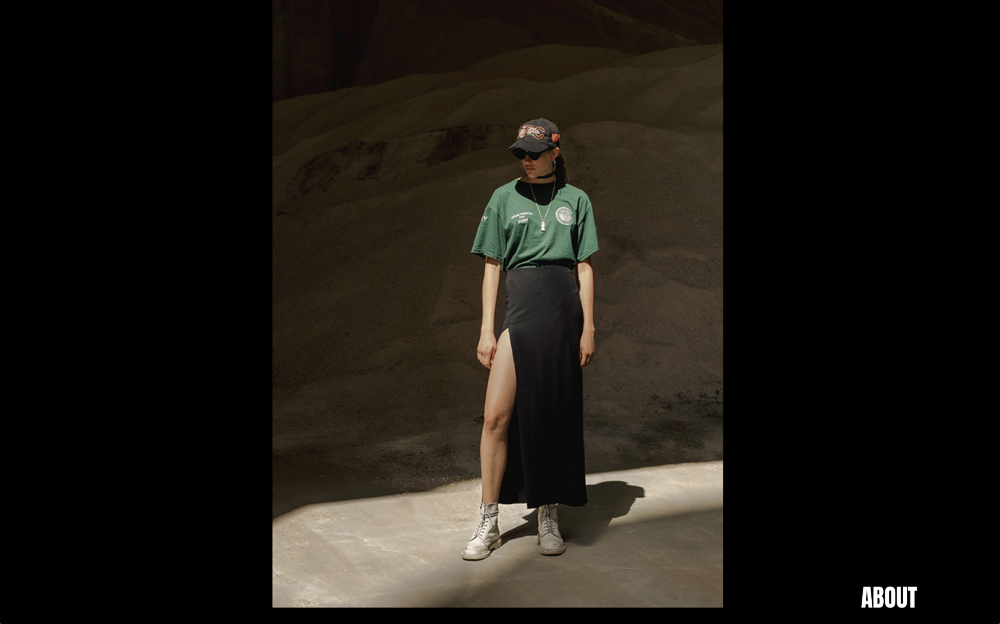
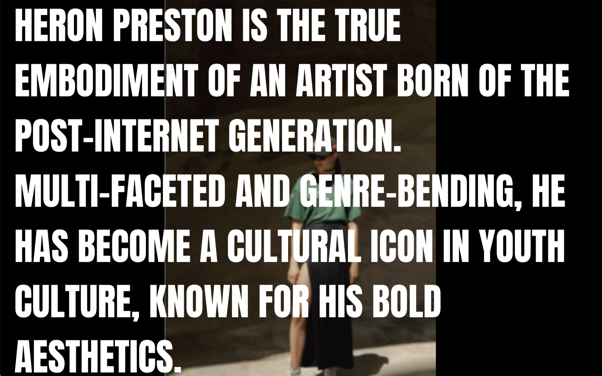
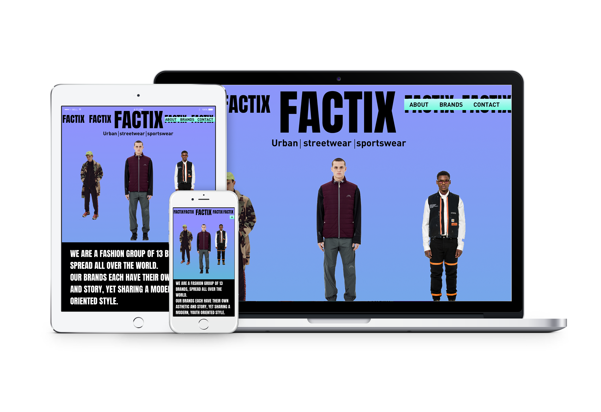

The brief
This project was part of a class in digital typography at Scuola Politecnica di Design (Milan). The brief:
Factix is a huge fashion corporate that includes more that ten brands spread all over the world. Each of their brand already have their website, but the corporate needs its own space to showcase the magnitude and the power of the group.
Design
The website is in the spirit of the brands : young, contemporary and has its own identity.
Brand pages







Role
UX designer
UI designer
For
Scuola Politecnica di Design
On
Sketch